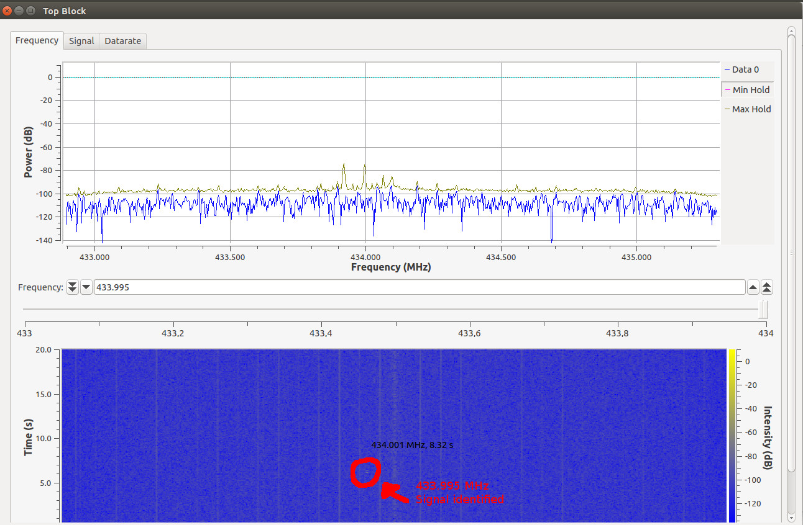
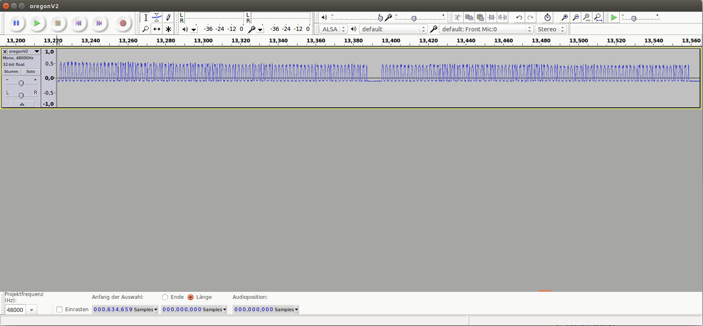
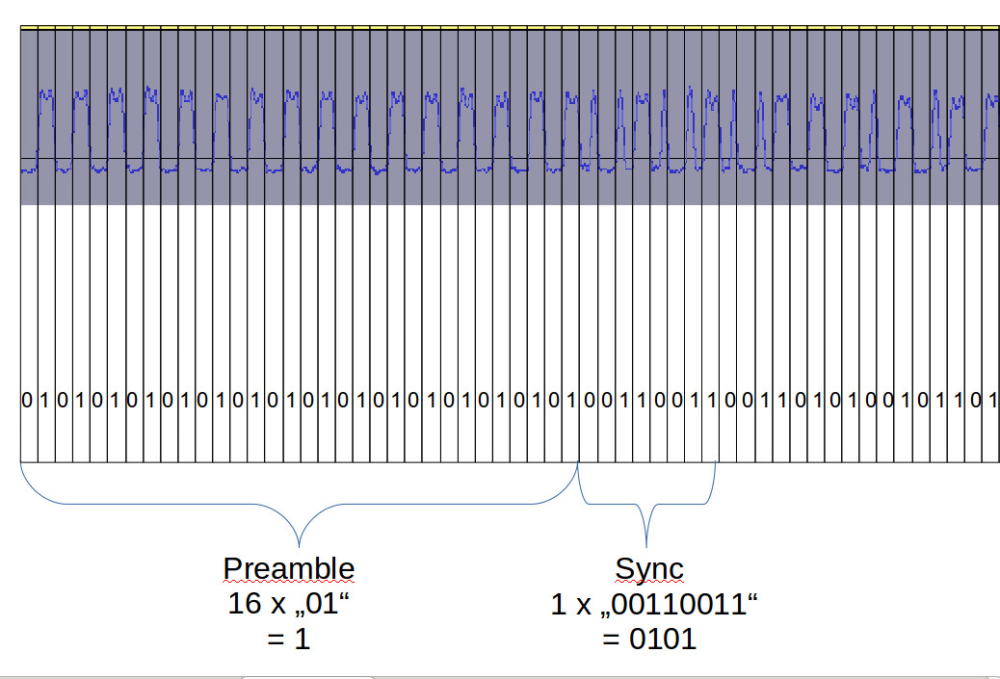
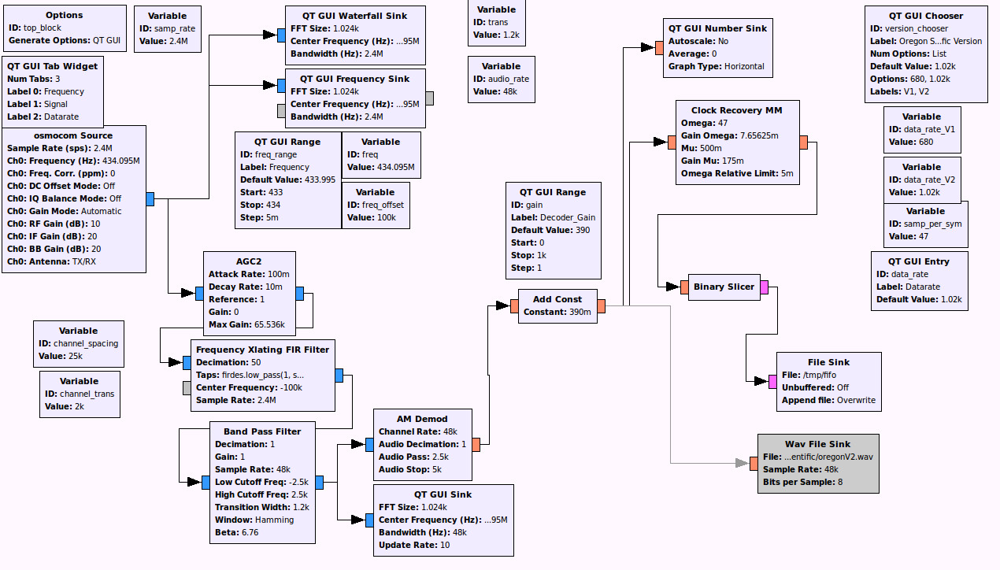
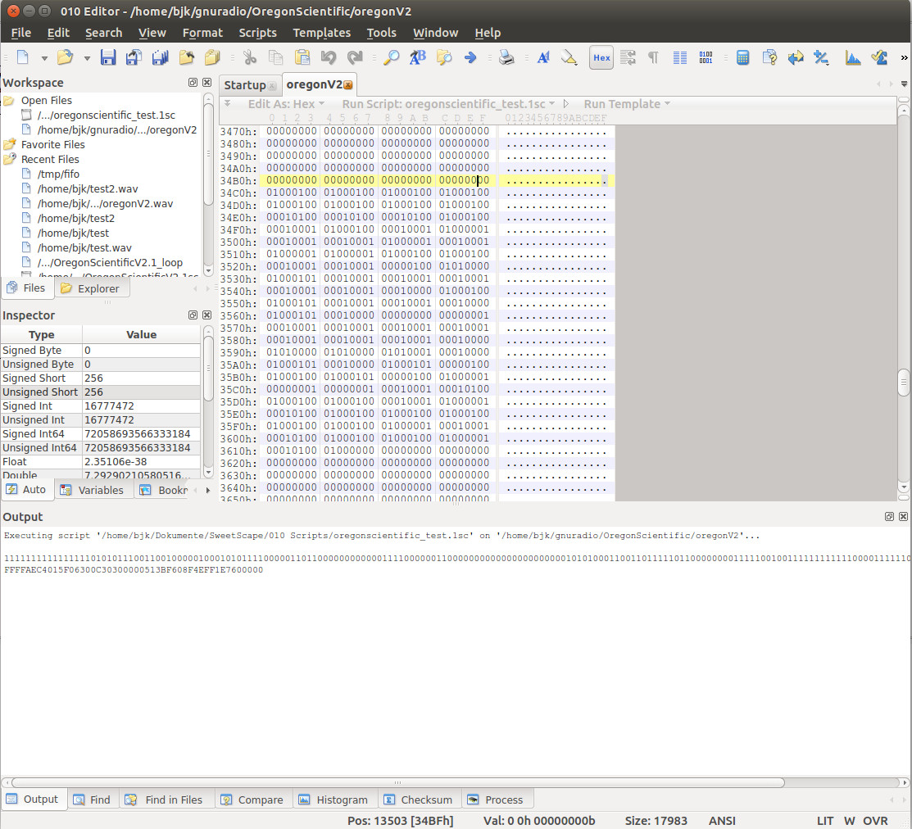

Configuration
Tested using Ettus Research B210 using 433 Mhz Discone Antenna. Due to
usage of Osmocom Source, Rtl and Hackrf Dongles should work fine as
well.
How
I figured out how it works
First I took an example recording to see how the actual signal looks
like using gnuradio :

Now I had to look closer at the signal. I recorded the signal to a wav
file with 48Khz.
This way I could clearly see that the signal is being sent twice and
that the structure was as I expected :

The next step was to see how the bytes were encoded :

The signal starts with a "01" sequence where 0 is the value for low and
1 is the value for high, which is being repeated 16 times for Version 2
and 12 times for Version 1 of the
Oregon Scientific Encoder, encoded as Manchester. Thus in order to see
the right bytes you need to leave apart every second byte. After that, a
sync message is being sent,
which is "0101" for version 2 and "01100" for version 1.
The main problem however started when I had to decide whether to decode
the signal using c++, python or using gnuradio itself. It turned out
that indeed the Binary Slicer
can be used to output a bitstream which then can be easily being used
for further processing. However in terms of speed, I think it would be
better to use a own slicer
and clock recovery in c++ instead. The slicer is more or less a function
to measure if a high or low signal actually occurs. You can just use
this pseudo-code as well instead :
unsigned char midlevel=0x80;
string bitstream="";
unsigned char bit=0;
while (bit=fifo->read(1)) //read one byte from stream or wav file
(same as one bit as one byte is one symbol)
{
if (counter==datarate)
{
if (bit>midlevel) bitstream+=1; //high detected
else if (bit<=midlevel) bitstream+=0; //low
detected
counter=0; // Start counting from 0 again
// Here you would create thread to handle the
bitstream or anything else
}
counter++; // Increase counter while looping
}
Here is how my gnuradio pre_processor for ask looks like :

How the gnuradio processor works
First, the gain of the signal is being
increased using AGC2 before the FIR Filter and Band Pass Filter.
Amplitude Shift Keying turns out to be quite bad when it comes to use
AGC2 between the FIR
and Band Pass Filters, if there are better options, please tell me :)
After the signal has been filtered, it is being demodulated by
AMplitude ... it doesn't matter if you use the Complex-To-Magnitude
block instead, it works fine as well. After the signal has been
demodulated,
you can now see the low and high signals occurring. However, as the
signal sometimes is too weak to process by the Binary Slicer, you have
to use a "add const" block to level the signal up. For the B210,
390m is just fine, other recievers might have to in- or decrease the
value to get proper decoding. The Clock Recovery MM Block just
recovers the stream according to our datarate, or in other words : it
picks up one sample every 47 samples, which is
(audio_rate/data_rate)=(48000/1020)=47 samples per second, and writes
it to a new output stream, which is thenbeing sliced (high to 1 and
low to 0) as a
bit stream to a file.
As the sample_rate of 2.4M is way to high to process for slow PCs, the
Xlating FIR Filter decimates the samples by 50, which is 2.4M/50=48K.
Opening up the output file by
Hex-Editor, you should see something similar like this :

I wrote a small script named "oregonscientific_test.1sc" for the
010Editor, just position the cursor at the "00" before the "01" byte to
get a decoding by pressing F7-Function key.
You can find both Wav- and Outputs for both Oregon-Scientific Versions 1
and 2, which I've recorded by using my own temperature sensors.
Encoder
versions supported
Version 1:
THR128H
Version 2:
THN132N, THR238NF
How-To-Use
1. Install Gnuradio-Companion
3.7 or higher
2. Get my code at
GitHub via "git clone https://github.com/bkerler/OregonDecoder"
3. "gnuradio-companion rx_ask.grc" and run grc
4. "mkfifo /tmp/fifo" if fifo doesn't yet exist
5. "python OregonDecoder.py"
6. Select appropriate decoder Version from Tab or use any datarate for
custom ASK-Decoders
Example
Messages
THR132N V2:
FFFF A EC40 1 5F 0 730 0 D3 : FFFF=Preable, A=Sync, Flags: 1, Rolling
Code: 5F, Temperature: 3,7°C, Checksum: 3D ok
FFFF A EC40 1 5F 0 830 0 E3 : FFFF=Preable, A=Sync, Flags: 1, Rolling
Code: 5F, Temperature: 3,8°C, Checksum: 3E ok